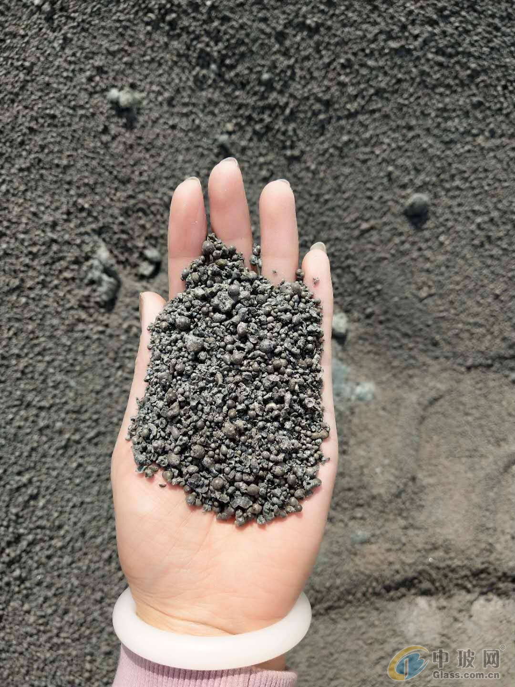

2026-10-01
EnviCore SCM Facility Moves Toward Commercial Scale
A strategic investment supporting a planned 200,000-tonne facility moves alternative SCM production from technical evaluation toward a first commercial-scale test.
EnviCore 替代性 SCM 项目迈向商业化规模
一项战略投资将支持规划年产 20 万吨的设施建设，推动替代性 SCM 从技术评估迈向首次商业化规模验证。

CRH Ventures announced on 24 September 2026 that it had made a strategic investment in EnviCore, a Canadian company developing supplementary cementitious materials from mineral resources and industrial by-products. The investment is intended to support a first-of-a-kind facility with planned capacity of 200,000 tonnes per year. This is a relevant alternative SCM production signal, although the announcement does not report a completed plant or commercial output.
1. A wider feedstock base could diversify SCM supply
EnviCore says its thermo-chemical process can treat clays, natural pozzolans, recycled concrete and glass, industrial by-products and mine tailings. The technology has been evaluated across multiple feedstocks and is designed to integrate with existing cement-production infrastructure. That flexibility could become more valuable where traditional fly ash or slag availability is constrained, but each source will still need its own chemical, physical and performance assessment.
2. First-of-a-kind capacity is a scale test, not final proof
A planned 200,000-tonne annual facility is materially different from laboratory or pilot work. Continuous operation must demonstrate feedstock preparation, energy demand, process control, product consistency, maintenance and cost. CRH and EnviCore say they will continue evaluating the technology across a range of materials. Procurement teams should therefore distinguish planned capacity from available supply and require representative testing, acceptance criteria and dependable delivery evidence before qualification.
3. A broader SCM portfolio increases qualification discipline
Alternative SCMs can expand clinker-substitution options, but they do not make established materials interchangeable. GGBFS, GBFS, fly ash, calcined clay and processed waste streams have different chemistry, processing routes and standards. Buyers need source-specific specifications, sampling and test methods, storage plans and volume visibility. For cross-border supply, material performance must also align with cargo readiness and logistics execution.
Takeaway: The EnviCore investment shows growing interest in converting diverse local resources into scalable supplementary cementitious materials. Commercial relevance will depend on whether the first facility can deliver repeatable quality, competitive economics and reliable volume—not planned nameplate capacity alone. Source: CRH Ventures, published 24 September 2026.
CRH Ventures 于 2026 年 9 月 24 日宣布，对加拿大企业 EnviCore 进行战略投资。该公司正在利用矿物资源和工业副产物开发补充性胶凝材料，投资将支持建设首个规划年产能 20 万吨的设施。这是一个值得关注的替代性 SCM 生产信号，但公告并未表明工厂已经建成或形成商业产量。
1. 更广的原料基础有望推动 SCM 供应多元化
EnviCore 表示，其热化学工艺可处理黏土、天然火山灰、再生混凝土与玻璃、工业副产物及尾矿。该技术已针对多种原料进行评估，并被设计为可与现有水泥生产基础设施结合。在传统粉煤灰或矿渣供应受限的地区，这种灵活性可能更有价值；但不同来源仍需分别完成化学、物理及应用性能评估。
2. 首套设施的规划产能仍需接受规模化验证
规划年产 20 万吨的设施与实验室或中试运行存在本质差异。连续生产需要验证原料预处理、能耗、过程控制、产品一致性、维护和成本。CRH 与 EnviCore 表示将继续使用多种材料评估该技术。因此，采购团队应区分规划产能与可供货量，在材料认证前要求代表性检测、明确验收标准及可靠交付证据。
3. SCM 组合扩大，更需要严格的材料认证
替代性 SCM 可以拓宽熟料替代选择，但不代表成熟材料之间可以相互替换。矿渣粉（GGBFS）、粒化高炉矿渣（GBFS）、粉煤灰、煅烧黏土与加工废弃物在化学组成、加工路径和适用标准方面均有差异。买方需要针对具体来源明确规格、取样与检测方法、仓储方案和可用数量；跨境供应还要让材料性能与货物准备及物流执行相匹配。
结论：EnviCore 获得投资表明，行业对把多样化本地资源转化为规模化补充性胶凝材料的兴趣正在增强。其商业价值最终取决于首套设施能否稳定提供一致质量、具竞争力的经济性和可靠产量，而不能只看规划铭牌产能。来源：CRH Ventures，发布于 2026 年 9 月 24 日。